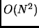
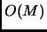
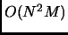
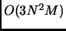
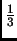

Each chain is organized as a one-dimensional array. Each array has an array list, called a link, which contains the actual data, and array list count showing how many items are in each array. A next and previous value in this case would be superfluous since columns and rows are arranges in lexicographical order. The array list contains the following items:
In the case of a column chain, the keys are row identifiers. In the case of a row chain, the keys are column identifier. This structure is similar to a matrix and can be represented by a matrix. The essential thing for the chain is the arrangement of the array lists. Zero values are not allowed, and thus order and index keys must be maintained.
What has this to do with sparse matrix multiplication? The left matrix is transformed into a row chain and the right matrix is transformed into a column chain. Each value of the result matrix is simply a multiplication of the row vectors in the left matrix by the column vectors in the right matrix. With the chain structure, it simply row links times the column links. Only elements with matching keys are allowed to be multiplied together. The rest are assumed to be zero, and thus no action is taken. The sum of the multiplies is the result. The multiplication procedure is as follows:
For the Matrix Chain Multiply the complexity is . For the chain multiply, the complexity is  where M is the larger length of the two links. Thus total complexity is  since M's largest size is N. This a general and simple algorithm for sparse matrix multiplication of matrix chains. Of course the chore of loading the matrix chains is per matrix. Thus total cost is on the order of . So long as M is significantly less than N ( on the order of a ), then the wavelet matrix multiplication has a reasonable advantage.